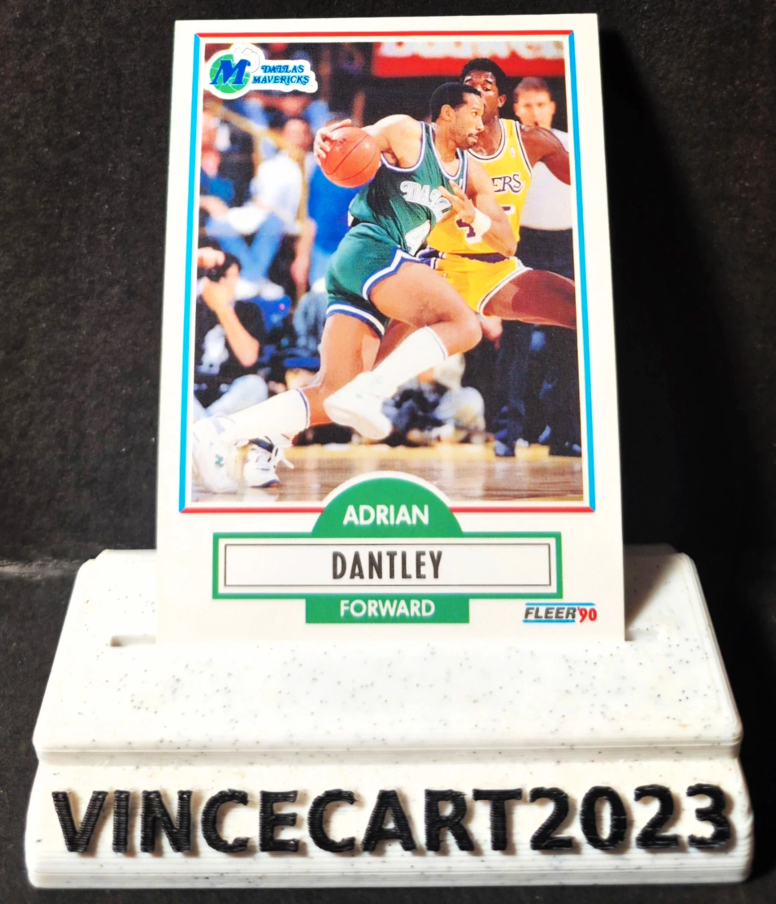

Carte NBA Adrian Dantley #39 Fleer 1990 – Dallas Mavericks – Hall of Fame – Vintage
1,65 €
🏀 Carte NBA originale Adrian Dantley – Dallas Mavericks
Je vends cette carte Fleer 1990, n°39, représentant Adrian Dantley sous les couleurs des Dallas Mavericks.
📌 Caractéristiques :
Joueur : Adrian Dantley
Équipe : Dallas Mavericks
Collection : Fleer 1990
Numéro : #39
Carte originale vintage des années 90
État conforme aux photos (recto/verso)
⭐ Adrian Dantley est une légende de la NBA et membre du Basketball Hall of Fame. Double meilleur marqueur de la ligue et six fois All-Star, il fait partie des grands scoreurs de l'histoire du championnat. Une carte incontournable pour les collectionneurs de NBA vintage.
📦 Envoi rapide et soigné sous sleeve et protection rigide (top loader).
🏀 N'hésitez pas à consulter mon profil pour découvrir d'autres cartes NBA vintage, rookies, inserts et joueurs emblématiques. Remise possible pour l'achat de plusieurs cartes.
#NBA #AdrianDantley #DallasMavericks #Fleer1990 #HallOfFame #CarteNBA #BasketballCards #VintageNBA #CollectionNBA #VinceCart2023
Disponibilité à confirmer sur Vinted.